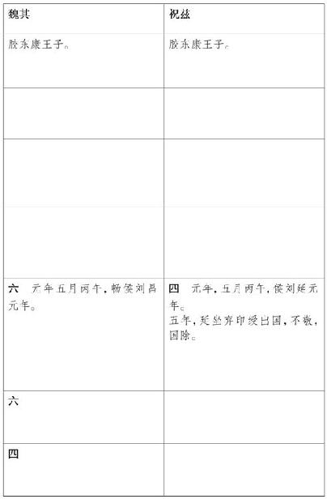
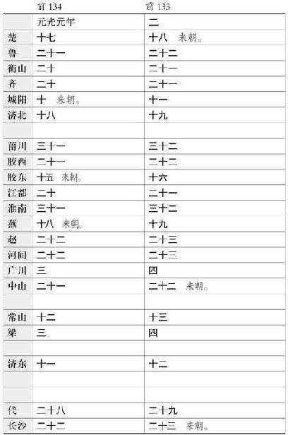
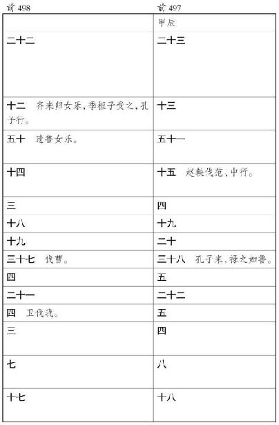

淮南厉王长 者，高祖 少子也，其母故赵王张敖 美人。高祖 八年，从东 垣 过赵 ，赵王 献之美人。厉王 母得幸焉，有身。赵王敖 弗敢内宫，为筑外宫而舍之。及贯高 等谋反柏人 事发觉，并逮治王，尽收捕王母兄弟美人，系之河内 。厉王 母亦系，告吏曰：“得幸上，有身。”吏以闻上，上方怒赵王 ，未理厉王 母。厉王 母弟赵兼 因辟阳侯 言吕后 ，吕后 妒，弗肯白，辟阳侯 不强争。及厉王 母已生厉王 ，恚，即自杀。吏奉厉王 诣上，上悔，令吕后 母之，而葬厉王 母真定 。真定 ，厉王 母之家在焉，父世县也。
高祖 十一年七月，淮南王黥布 反，立子长 为淮南王 ，王黥布 故地，凡四郡。上自将兵击灭布 ，厉王 遂即位。厉王 蚤失母，常附吕后 ，孝惠 、吕后 时以故得幸无患害，而常心怨辟阳侯 ，弗敢发。及孝文帝 初即位，淮南王 自以为最亲，骄蹇，数不奉法。上以亲故，常宽赦之。三年，入朝。甚横。从上入苑囿猎，与上同车，常谓上“大兄”。厉王 有材力，力能扛鼎，乃往请辟 阳侯 。辟阳侯 出见之，即自袖铁椎椎辟阳侯 ，令从者魏敬 刭之。厉王 乃驰走阙下，肉袒谢曰：“臣母不当坐赵 事，其时辟阳侯 力能得之吕后 ，弗争，罪一也。赵王如意 子母无罪，吕后 杀之，辟阳侯 弗争，罪二也。吕后 王诸吕 ，欲以危刘氏 ，辟阳侯 弗争，罪三也。臣谨为天下诛贼臣辟阳侯 ，报母之仇，谨伏阙下请罪。”孝文 伤其志，为亲故，弗治，赦厉王 。当是时，薄太后 及太子诸大臣皆惮厉王 ，厉王 以此归国益骄恣，不用汉 法，出入称警跸，称制，自为法令，拟于天子。
六年，令男子但 等七十人与棘蒲侯柴武 太子奇 谋，以 车四十乘反谷 口 ，令人使闽越 、匈奴 。事觉，治之，使使召淮南王 。淮南王 至长安 。
“丞相臣张仓、典客臣冯敬 、行御史大夫事宗正臣逸 、廷尉臣贺 、备盗贼中尉臣福 昧死言：淮南王长 废先帝法，不听天子诏，居处无度，为黄屋盖乘舆，出入拟于天子，擅为法令，不用汉 法。及所置吏，以其郎中春 为丞相，聚收汉 诸侯人及有罪亡者，匿与居，为治家室，赐其财物爵禄田宅，爵 或至关内侯，奉以二千石，所不当得，欲以有为。大夫但 、士五開章 等七十人与棘蒲侯 太子奇 谋反，欲以危宗庙社稷。使开章 阴告长 ，与谋使闽越 及匈奴 发其兵。开章 之淮南 见长 ，长 数与坐语饮食，为家室娶妇，以二千石俸奉之。开章 使人告但 ，已言之王。春 使使报但 等。吏觉知，使长安 尉奇 等往捕开章 。长 匿不予，与故中尉 忌 谋，杀以闭口。为棺椁衣衾，葬之服陵邑 ，谩吏曰‘不知安在’。又详聚土，树表其上，曰‘开章 死，埋此下’。及长 身自贼杀无罪者一人；令吏论杀无罪者六人；为亡命弃市罪诈捕命者以除罪；擅罪人，罪人无告劾，系治城旦舂以上十四人；赦免罪人，死罪十八人，城旦舂以下五十八人；赐人爵关内侯以下九十四人。前日长 病，陛下忧苦之，使使者赐书、枣脯。长 不欲受赐，不肯见拜使者。南海 民处庐 江 界中者反，淮南 吏卒击之。陛下以淮南 民贫苦，遣使者赐长 帛五千匹，以赐吏卒劳苦者。长 不欲受赐，谩言曰‘无劳苦者’。南海 民王织 上书献璧皇帝，忌 擅燔其书，不以闻。吏请召治忌 ，长 不遣，谩言曰‘忌 病’。春 又请长 ，愿入见，长 怒曰‘女欲离我自附汉 ’。长 当弃市，臣请论如法。”
制曰：“朕不忍致法于王，其与列侯二千石议。”
“臣仓 、臣敬 、臣逸 、臣福 、臣贺 昧死言：臣谨与列侯吏二千石臣婴 等四十三人议，皆曰‘長 不奉法度，不听天子诏，乃阴聚徒党及谋反者，厚养亡命，欲以有为’。臣等议论如法。”
制曰：“朕不忍致法于王，其赦长 死罪，废勿王。”
“臣仓 等昧死言：长 有大死罪，陛下不忍致法，幸赦，废勿王。臣请处蜀郡严道邛 邮，遣其子母从居，县为筑盖家室，皆廪食给薪菜盐豉炊食器席蓐。臣等昧死请，请布告天下。”
制曰：“计食长 给肉日五斤，酒二斗。令故美人才人得幸者十人从居。他可。”
尽诛所与谋者。于是乃遣淮南王 ，载以辎车，令县以次传。是时袁盎 谏上曰：“上素骄淮南王 ，弗为置严傅相，以故至此。且淮南王 为人刚，今暴摧折之，臣恐卒逢雾露病死，陛下为有杀弟之名，奈何！”上曰：“吾特苦之耳，今复之。”县传淮南王 者皆不敢发车封。淮南王 乃谓侍者曰：“谁谓乃公勇者？吾安能勇！吾以骄故不闻吾过至此。人生一世间，安能邑邑如此！”乃不食死。至雍 ，雍 令发封，以死闻。上哭甚悲，谓袁盎 曰：“吾不听公言，卒亡淮南王 。”盎 曰：“不可奈何，愿陛下自宽。”上曰：“为之奈何？”盎 曰：“独斩丞相、御史以谢天下乃可。”上即令丞相、御史逮考诸县传送淮 南王 不发封馈侍者，皆弃市。乃以列侯葬淮南王 于雍 ，守冢三十户。
孝文 八年，上怜淮南王 ，淮南王 有子四人，皆七八岁，乃封子安 为阜陵 侯 ，子勃 为安阳侯 ，子赐 为阳周侯 ，子良 为东成侯 。
孝文 十二年，民有作歌歌淮南厉王 曰：“一尺布，尚可缝；一斗粟，尚可舂。兄弟二人不能相容。”上闻之，乃叹曰：“尧舜 放逐骨肉，周公 杀管蔡 ，天下称圣。何者？不以私害公。天下岂以我为贪淮南王 地邪？”乃徙城阳 王 王淮南 故地，而追尊谥淮南王 为厉王 ，置园复如诸侯仪。
孝文 十六年，徙淮南王喜 复故城阳 。上怜淮南厉王 废法不轨，自使失国蚤死，乃立其三子：阜陵侯安 为淮南王 ，安阳侯勃 为衡山王 ，阳周侯赐 为庐江王 ，皆复得厉王 时地，参分之。东城侯良 前薨，无后也。
孝景 三年，吴楚 七国反，吴 使者至淮南 ，淮南王 欲发兵应之。其相曰：“大王必欲发兵应吴 ，臣愿为将。”王乃属相兵。淮南 相已将兵，因城守，不听王而为汉 ；汉 亦使曲城侯 将兵救淮南 ：淮南 以故得完。吴 使者至庐江 ，庐江王 弗应，而往来使越 。吴 使者至衡山 ，衡山王 坚守无二心。孝景 四年，吴楚 已破，衡山王 朝，上以为贞信，乃劳苦之曰：“南方卑湿。”徙衡山王 王济北 ，所以褒之。及薨，遂赐谥为贞王 。庐江王 边越 ，数使使相交，故徙为衡山王 ，王江北 。淮南王 如故。
淮南王安 为人好读书鼓琴，不喜弋猎狗马驰骋，亦欲以行阴德拊循百姓，流誉天下。时时怨望厉王 死，时欲畔逆，未有因也。及建元 二年，淮南 王 入朝。素善武安侯 ，武安侯 时为太尉，乃逆王霸上 ，与王语曰：“方今上无太子，大王亲高皇帝 孙，行仁义，天下莫不闻。即宫车一日晏驾，非大王当谁立者！”淮南王 大喜，厚遗武安侯 金财物。阴结宾客，拊循百姓，为畔逆事。建元 六年，彗星见，淮南王 心怪之。或说王曰：“先吴 军起时，彗星出长数尺，然尚流血千里。今彗星长竟天，天下兵当大起。”王心以为上无太子，天下有变，诸侯并争，愈益治器械攻战具，积金钱赂遗郡国诸侯游士奇材。诸辨士为方略者，妄作妖言，谄谀王，王喜，多赐金钱，而谋反滋甚。
淮南王 有女陵 ，慧，有口辩。王爱陵 ，常多予金钱，为中 长安 ，约结上左右。元朔 三年，上赐淮南王 几杖，不朝。淮南王 王后荼 ，王爱幸之。王后生太子迁 ，迁 取王皇太后 外孙修成君 女为妃。王谋为反具，畏太子妃知而内泄事，乃与太子谋，令诈弗爱，三月不同席。王乃详为怒太子，闭太子使与妃同内三月，太子终不近妃。妃求去，王乃上书谢归去之。王后荼 、太子迁 及女陵 得爱幸王，擅国权，侵夺民田宅，妄致系人。
元朔 五年，太子学用剑，自以为人莫及，闻郎中雷被 巧，乃召与戏。被 一再辞让，误中太子。太子怒，被 恐。此时有欲从军者辄诣京师，被 即愿 奋击匈奴 。太子迁 数恶被 于王，王使郎中令斥免，欲以禁后，被 遂亡至长 安 ，上书自明。诏下其事廷尉、河南 。河南 治，逮淮南 太子，王、王后计欲无遣太子，遂发兵反，计犹豫，十馀日未定。会有诏，即讯太子。当是时，淮南 相怒寿春 丞留太子逮不遣，劾不敬。王以请相，相弗听。王使人上书告相，事下廷尉治。踪迹连王，王使人候伺汉 公卿，公卿请逮捕治王。王恐事发，太子迁 谋曰：“汉 使即逮王，王令人衣卫士衣，持戟居庭中，王旁有非是，则刺杀之，臣亦使人刺杀淮南 中尉，乃举兵，未晚。”是时上不许公卿请，而遣汉 中尉宏 即讯验王。王闻汉 使来，即如太子谋计。汉 中尉至，王视其颜色和，讯王以斥雷被 事耳，王自度无何，不发。中尉还，以闻。公卿治者曰：“淮南王安 拥阏奋击匈奴 者靁被 等，废格明诏，当弃市。”诏弗许。公卿请废勿王，诏弗许。公卿请削五县，诏削二县。使中尉宏 赦淮南王 罪，罚以削地。中尉入淮南 界，宣言赦王。王初闻汉 公卿请诛之，未知得削地，闻汉 使来，恐其捕之，乃与太子谋刺之如前计。及中尉至，即贺王，王以故不发。其后自伤曰：“吾行仁义见削，甚耻之。”然淮南王 削地之后，其为反谋益甚。诸使道从长安 来，为妄妖言，言上无男，汉 不治，即喜；即言汉 廷治，有男，王怒，以为妄言，非也。
王日夜与伍被 、左吴 等案舆地图，部署兵所从入。王曰：“上无太子，宫车即晏驾，廷臣必征胶东王 ，不即常山王 ，诸侯并争，吾可以无备乎！且吾高祖 孙，亲行仁义，陛下遇我厚，吾能忍之；万世之后，吾宁能北面臣事竖子乎！”
王坐东宫，召伍被 与谋，曰：“将军上。”被 怅然曰：“上宽赦大王，王复安得此亡国之语乎！臣闻子胥 谏吴王 ，吴王 不用，乃曰‘臣今见麋鹿游姑 苏之台 也’。今臣亦见宫中生荆棘，露沾衣也。”王怒，系伍被 父母，囚之三月。复召曰：“将军许寡人乎？”被 曰：“不，直来为大王画耳。臣闻聪者听于无声，明者见于未形，故圣人万举万全。昔文王 一动而功显于千世，列为三代 ，此所谓因天心以动作者也，故海内不期而随。此千岁之可见者。夫百年之秦 ，近世之吴楚 ，亦足以喻国家之存亡矣。臣不敢避子胥 之诛，愿大王毋为吴王 之听。昔秦 绝圣人之道，杀术士，燔诗书 ，弃礼义，尚诈力，任刑罚，转负海之粟致之西河 。当是之时，男子疾耕不足于糟糠，女子纺绩不足于盖形。遣蒙恬 筑长城，东西数千里，暴兵露师常数十万，死者不可胜数，僵尸千里，流血顷亩，百姓力竭，欲为乱者十家而五。又使徐福 入海求神异物，还为伪辞曰：‘臣见海中大神，言曰：“汝西皇之使邪？”臣答曰：“然。”“汝何求？”曰：“愿请延年益寿药。”神曰：“汝秦王 之礼薄，得观而 不得取。”即从臣东南至蓬莱山 ，见芝成宫阙，有使者铜色而龙形，光上照天。于是臣再拜问曰：“宜何资以献？”海神曰：“以令名男子若振女与百工之事，即得之矣。”’秦皇帝 大说，遣振男女三千人，资之五谷种种百工而行。徐福 得平原广泽，止王不来。于是百姓悲痛相思，欲为乱者十家而六。又使尉佗 逾五岭 攻百越 。尉佗 知中国劳极，止王不来，使人上书，求女无夫家者三万人，以为士卒衣补。秦皇帝 可其万五千人。于是百姓离心瓦解，欲为乱者十家而七。客谓高皇帝 曰：‘时可矣。’高皇帝 曰：‘待之，圣人当起东南间。’不一年，陈胜吴广 发矣。高皇 始于丰沛 ，一倡天下不期而响应者不可胜数也。此所谓蹈瑕候间，因秦 之亡而动者也。百姓愿之，若旱之望雨，故起于行陈之中而立为天子，功高三王 ，德传无穷。今大王见高皇帝 得天下之易也，独不观近世之吴楚 乎？夫吴王 赐号为刘氏 祭酒，復不朝，王四郡之众，地方数千里，内铸消铜以为钱，东煮海水以为盐，上取江陵 木以为船，一船之载当中国数十两车，国富民众。行珠玉金帛赂诸侯宗室大臣，独窦氏 不与。计定谋成，举兵而西。破于大梁 ，败于狐父 ，奔走而东，至于丹徒 ，越 人禽之，身死绝祀，为天下笑。夫以吴越 之众不能成功者何？诚逆天道而不知时也。方今大王之兵众不能十分吴楚 之一，天下安宁有万倍于秦 之时，愿大王从臣之计。大王不从臣之计，今见大王事必不成而语先泄也。臣闻微子 过故国而悲，于是作麦秀之歌 ，是痛纣 之不用王子比干 也。故孟子 曰‘纣 贵为天子，死曾不若匹夫'。是纣 先自绝于天下久矣，非死之日而天下去之。今臣亦窃悲大王弃千乘之君，必且赐绝命之书，为群臣先，死于东宫也。于是气怨结而不扬，涕满匡而横流，即起，历阶而去。
王有孽子不害 ，最长，王弗爱，王、王后、太子皆不以为子兄数。不害 有子建 ，材高有气，常怨望太子不省其父；又怨时诸侯皆得分子弟为侯，而淮南 独二子，一为太子，建 父独不得为侯。建 阴结交，欲告败太子，以其父代之。太子知之，数捕系而榜笞建 。建 具知太子之谋欲杀汉 中尉，即使所善寿春庄芷 以元朔 六年上书于天子曰：“毒药苦于口利于病，忠言逆于耳利于行。今淮南王 孙建 ，材能高，淮南王 王后荼 、荼 子太子迁 常疾害建 。建 父不害 无罪，擅数捕系，欲杀之。今建 在，可征问，具知淮南 阴事。”书闻，上以其事下廷尉，廷尉下河南 治。是时故辟阳侯 孙审卿 善丞相公孙 弘 ，怨淮南厉王 杀其大父，乃深购淮南 事于弘 ，弘 乃疑淮南 有畔逆计谋，深穷治其狱。河南 治建 ，辞引淮南 太子及党与。淮南王 患之，欲发，问伍被 曰：“汉 廷治乱？”伍被 曰：“天下治。”王意不说，谓伍被 曰：“公何以言天下 治也？”被 曰：“被 窃观朝廷之政，君臣之义，父子之亲，夫妇之别，长幼之序，皆得其理，上之举错遵古之道，风俗纪纲未有所缺也。重装富贾，周流天下，道无不通，故交易之道行。南越 宾服，羌晣 入献，东瓯 入降，广长榆 ，开朔方 ，匈奴 折翅伤翼，失援不振。虽未及古太平之时，然犹为治也。”王怒，被 谢死罪。王又谓被 曰：“山东 即有兵，汉 必使大将军将而制山东 ，公以为大将军何如人也？”被 曰：“被 所善者黄义 ，从大将军击匈奴 ，还，告被 曰：‘大将军遇士大夫有礼，于士卒有恩，众皆乐为之用。骑上下山若蜚，材干绝人。’被 以为材能如此，数将习兵，未易当也。及谒者曹梁 使长安 来，言大将军号令明，当敌勇敢，常为士卒先。休舍，穿井未通，须士卒尽得水，乃敢饮。军罢，卒尽已度河 ，乃度。皇太后所赐金帛，尽以赐军吏。虽古名将弗过也。”王默然。
淮南王 见建 已征治，恐国阴事且觉，欲发，被 又以为难，乃复问被 曰：“公以为吴 兴兵是邪非也？”被 曰：“以为非也。吴王 至富贵也，举事不当，身死丹徒 ，头足异处，子孙无遗类。臣闻吴王 悔之甚。愿王孰虑之，无为吴王 之所悔。”王曰：“男子之所死者一言耳。且吴 何知反，汉 将一日过成 皋 者四十馀人。今我令楼缓 先要成皋 之口，周 被下颍川 兵塞 辕 、伊阙 之道，陈定 发南阳 兵守武关 。河南 太守独有雒阳 耳，何足忧。然此北尚有临 晋关 、河东 、上党 与河内 、赵国 。人言曰‘绝成皋 之口，天下不通’。据三川 之险，招山东 之兵，举事如此，公以为何如？”被 曰：“臣见其祸，未见其福也。”王曰：“左吴 、赵贤 、朱骄如 皆以为有福，什事九成，公独以为有祸无福，何也？”被 曰：“大王之群臣近幸素能使众者，皆前系诏狱，馀无可用者。”王曰：“陈胜 、吴广 无立锥之地，千人之聚，起于大泽，奋臂大呼而天下响应，西至于戏 而兵百二十万。今吾国虽小，然而胜兵者可得十馀万，非直適戍之众， 凿棘矜也，公何以言有祸无福？”被 曰：“往者秦 为无道，残贼天下。兴万乘之驾，作阿房 之宫，收太半之赋，发闾左之戍，父不宁子，兄不便弟，政苛刑峻，天下熬然若焦，民皆引领而望，倾耳而听，悲号仰天，叩心而怨上，故陈胜 大呼，天下响应。当今陛下临制天下，一齐海内，泛爱蒸庶，布德施惠。口虽未言，声疾雷霆，令虽未出，化驰如神，心有所怀，威动万里，下之应上，犹影响也。而大将军材能不特章邯 、杨熊 也。大王以陈胜 、吴广 谕之，被 以为过矣。”王曰：“苟如公言，不可徼幸邪？”被 曰：“被 有愚计。”王曰：“奈何？”被 曰：“当今诸侯无异心，百姓无怨气。朔方之郡 田地广，水草美，民徙者不足以实其地。臣之愚计，可伪为丞相御史请书，徙郡国豪桀任侠及有耐罪以上，赦令除其罪，产五十万以上者，皆徙其家 属朔方之郡 ，益发甲卒，急其会日。又伪为左右都司空上林 中都官诏狱书，逮诸侯太子幸臣。如此则民怨，诸侯惧，即使辩武随而说之，傥可徼幸什得一乎？”王曰：“此可也。虽然，吾以为不至若此。”于是王乃令官奴入宫，作皇帝玺，丞相、御史、大将军、军吏、中二千石、都官令、丞印，及旁近郡太守、都尉印，汉 使节法冠，欲如伍被 计。使人伪得罪而西，事大将军、丞相；一日发兵，使人即刺杀大将军青 ，而说丞相下之，如发蒙耳。
王欲发国中兵，恐其相、二千石不听。王乃与伍被 谋，先杀相、二千石；伪失火宫中，相、二千石救火，至即杀之。计未决，又欲令人衣求盗衣，持羽檄，从东方来，呼曰“南越 兵入界”，欲因以发兵。乃使人至庐江 、会稽 为求盗，未发。王问伍被 曰：“吾举兵西乡，诸侯必有应我者；即无应，奈何？”被 曰：“南收衡山 以击庐江 ，有寻阳 之船，守下雉 之城，结九江 之浦，绝豫章 之口，强弩临江 而守，以禁南郡 之下，东收江都 、会稽 ，南通劲越 ，屈强江淮 间，犹可得延岁月之寿。”王曰：“善，无以易此。急则走越 耳。”
于是廷尉以王孙建 辞连淮南王 太子迁 闻。上遣廷尉监因拜淮南 中尉，逮捕太子。至淮南 ，淮南王 闻，与太子谋召相、二千石，欲杀而发兵。召相，相至；内史以出为解。中尉曰：“臣受诏使，不得见王。”王念独杀相而内史中尉不来，无益也，即罢相。王犹豫，计未决。太子念所坐者谋刺汉 中尉，所与谋者已死，以为口绝，乃谓王曰：“群臣可用者皆前系，今无足与举事者。王以非时发，恐无功，臣愿会逮。”王亦偷欲休，即许太子。太子即自刭，不殊。伍被 自诣吏，因告与淮南王 谋反，反踪迹具如此。
吏因捕太子、王后，围王宫，尽求捕王所与谋反宾客在国中者，索得反具以闻。上下公卿治，所连引与淮南王
谋反列侯二千石豪杰数千人，皆以罪轻重受诛。衡山王赐
，淮南王
弟也，当坐收，有司请逮捕衡山王
。天子曰：“诸侯各以其国为本，不当相坐。与诸侯王列侯会肄丞相诸侯议。”赵
王彭祖
、列侯臣让
等四十三人议，皆曰：“淮南王安
甚大逆无道，谋反明白，当伏诛。”胶西王
臣端
议曰：“淮南王安
废法行邪，怀诈伪心，以乱天下，荧惑百姓，倍畔宗庙，妄作妖言。春秋
曰‘臣无将，将而诛’。安
罪重于将，谋反形已定。臣端
所见其书节印图及他逆无道事验明白，甚大逆无道，当伏其法。而论国吏二百石以上及比者，宗室近幸臣不在法中者，不能相教，当皆免官削爵为士伍，毋得宦为吏。其非吏，他赎死金二斤八两。以章臣安
之罪，使天下明知臣子之道，毋敢复有邪僻倍畔之意。”丞相弘
、廷尉汤
等以闻，天子使宗正以符节治王。未至，淮南王安
自刭杀。王后荼
、太子迁
诸所与谋反者皆族。天子以伍被
雅辞多引汉
之美，欲勿诛。廷尉汤
曰：
“被
首为王画反谋，被
罪无赦。”遂诛被
。国除为九江郡
。
衡山王赐 ，王后乘舒 生子三人，长男爽 为太子，次男孝 ，次女无采 。又姬徐来 生子男女四人，美人厥姬 生子二人。衡山王 、淮南王 兄弟相责望礼节，间不相能。衡山王 闻淮南王 作为畔逆反具，亦心结宾客以应之，恐为所并。
元光 六年，衡山王 入朝，其谒者卫庆 有方术，欲上书事天子，王怒，故劾庆 死罪，强榜服之。衡山 内史以为非是，却其狱。王使人上书告内史，内史治，言王不直。王又数侵夺人田，坏人冢以为田。有司请逮治衡山 王 。天子不许，为置吏二百石以上。衡山王 以此恚，与奚慈 、张广昌 谋，求能为兵法候星气者，日夜从容王密谋反事。
王后乘舒 死，立徐来 为王后。厥姬 俱幸。两人相妒，厥姬 乃恶王后徐 来 于太子曰：“徐来 使婢蛊道杀太子母。”太子心怨徐来 。徐来 兄至衡山 ，太子与饮，以刃刺伤王后兄。王后怨怒，数毁恶太子于王。太子女弟无 采 ，嫁弃归，与奴奸，又与客奸。太子数让无采 ，无采 怒，不与太子通。王后闻之，即善遇无采 。无采 及中兄孝 少失母，附王后，王后以计爱之，与共毁太子，王以故数击笞太子。元朔 四年中，人有贼伤王后假母者，王疑太子使人伤之，笞太子。后王病，太子时称病不侍。孝 、王后、无采 恶太子：“太子实不病，自言病，有喜色。”王大怒，欲废太子，立其弟孝 。王后知王决废太子，又欲并废孝 。王后有侍者，善舞，王幸之，王后欲令侍者与孝 乱以汙之，欲并废兄弟而立其子广 代太子。太子爽 知之，念后数恶己无已时，欲与乱以止其口。王后饮，太子前为寿，因据王后股，求与王后卧。王后怒，以告王。王乃召，欲缚而笞之。太子知王常欲废己立其弟孝 ，乃谓王曰：“孝 与王御者奸，无采 与奴奸，王强食，请上书。”即倍王去。王使人止之，莫能禁，乃自驾追捕太子。太子妄恶言，王械系太子宫中。孝 日益亲幸。王奇孝 材能，乃佩之王印，号曰将军，令居外宅，多给金钱，招致宾客。宾客来者，微知淮南 、衡山 有逆计，日夜从容劝之。王乃使孝 客江都 人救赫 、陈喜 作 车镞矢，刻天子玺，将相军吏印。王日夜求壮士如周丘 等，数称引吴楚 反时计画，以约束。衡山王 非敢效淮南王 求即天子位，畏淮南 起并其国，以为淮南 已西，发兵定江淮 之间而有之，望如是。
元朔 五年秋，衡山王 当朝，过淮南 ，淮南王 乃昆弟语，除前郤，约束反具。衡山王 即上书谢病，上赐书不朝。
元朔
六年中，衡山王
使人上书请废太子爽
，立孝
为太子。爽
闻，即使
所善白嬴
之长安
上书，言孝
作
车镞矢，与王御者奸，欲以败孝
。白嬴
至长安
，未及上书，吏捕嬴
，以淮南
事系。王闻爽
使白嬴
上书，恐言国阴事，即上书反告太子爽
所为不道弃市罪事。事下沛郡
治。元狩
元年冬，有司公卿下沛郡
求捕所与淮南
谋反者未得，得陈喜
于衡山王
子孝
家。吏劾孝
首匿喜
。孝
以为陈喜
雅数与王计谋反，恐其发之，闻律先自告除其罪，又疑太子使白嬴
上书发其事，即先自告，告所与谋反者救赫
、陈喜
等。廷尉治验，公卿请逮捕衡山王
治之。天子曰：“勿捕。”遣中尉安
、大行息
即问王，王具以情实对。吏皆围王宫而守之。中尉大行还，以闻，公卿请遣宗正、大行与沛郡
杂治王。王闻，即自刭杀。孝
先自告反，除其罪；坐与王御婢奸，弃市。王后徐来
亦坐蛊杀前王后乘舒
，及太子爽
坐王告不孝，皆弃市。诸与衡山王
谋反者皆族。国除为衡山郡
。
太史公 曰：诗 之所谓“戎狄 是膺，荆舒 是惩”，信哉是言也。淮南 、衡山 亲为骨肉，疆土千里，列为诸侯，不务遵蕃臣职以承辅天子，而专挟邪僻之计，谋为畔逆，仍父子再亡国，各不终其身，为天下笑。此非独王过也，亦其俗薄，臣下渐靡使然也。夫荆楚 僳勇轻悍，好作乱，乃自古记之矣。